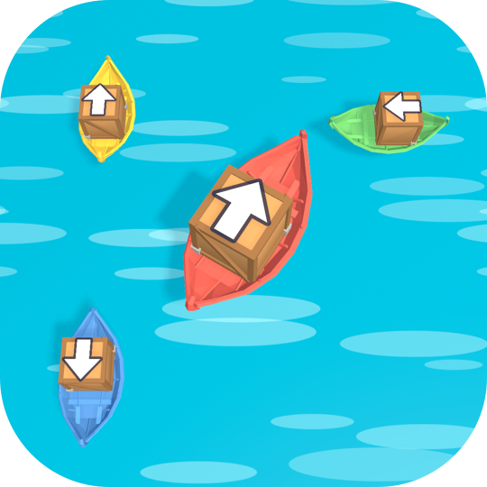

Harbor JamKullanım Şartları
Yürürlük tarihi: 26 Ekim 2026 · Geliştirici: Mert Göğdemir
Harbor Jam'i indirip kullanarak bu şartları ve Apple'ın Standart Son Kullanıcı Lisans Sözleşmesi'ni (EULA) kabul etmiş olursunuz.
Lisans
Oyunu kişisel ve ticari olmayan amaçlarla kullanmanız için size sınırlı, devredilemez bir lisans verilir. Oyunun kodunu kopyalamak, değiştirmek, tersine mühendislik yapmak veya hile kullanmak yasaktır.
Sanal para ve ürünler
Altın, yıldız, booster ve can gibi oyun içi öğeler gerçek para değeri taşımaz, paraya çevrilemez ve oyun dışında aktarılamaz. Satın almalar Apple üzerinden yapılır; iadeler Apple'ın politikalarına tabidir. Tüketilebilir ürünler kullanıldığında geri yüklenemez; "Reklamsız" ve "Başlangıç Paketi" gibi kalıcı ürünler Mağaza'daki "Geri yükle" ile geri getirilebilir.
Reklamlar
Oyun reklam içerir. Ödüllü reklamlar isteğe bağlıdır.
Sorumluluk
Oyun "olduğu gibi" sunulur. Yasaların izin verdiği ölçüde, kesintisiz veya hatasız çalışacağını garanti etmeyiz ve oyunun kullanımından doğan dolaylı zararlardan sorumlu değiliz.
Değişiklikler
Oyunu ve bu şartları zaman zaman güncelleyebiliriz. Güncel metin bu sayfada yayınlanır.
İletişim
Terms of Use
Effective date: October 26, 2026 · Developer: Mert Göğdemir
By downloading and using Harbor Jam you agree to these terms and to Apple's Standard End User License Agreement (EULA).
License
You get a limited, non-transferable license to use the game for personal, non-commercial purposes. Copying, modifying or reverse-engineering the game, or cheating, is not allowed.
Virtual currency and items
Coins, stars, boosters, lives and other in-game items have no real-world value, cannot be exchanged for money and cannot be transferred outside the game. Purchases are made through Apple and refunds follow Apple's policies. Consumable items cannot be restored once used; permanent items such as "No Ads" and the "Starter Pack" can be restored with "Restore" in the Shop.
Advertising
The game contains ads. Rewarded ads are optional.
Liability
The game is provided "as is". To the extent permitted by law, we do not guarantee uninterrupted or error-free operation and are not liable for indirect damages arising from its use.
Changes
We may update the game and these terms from time to time. The current text is posted on this page.